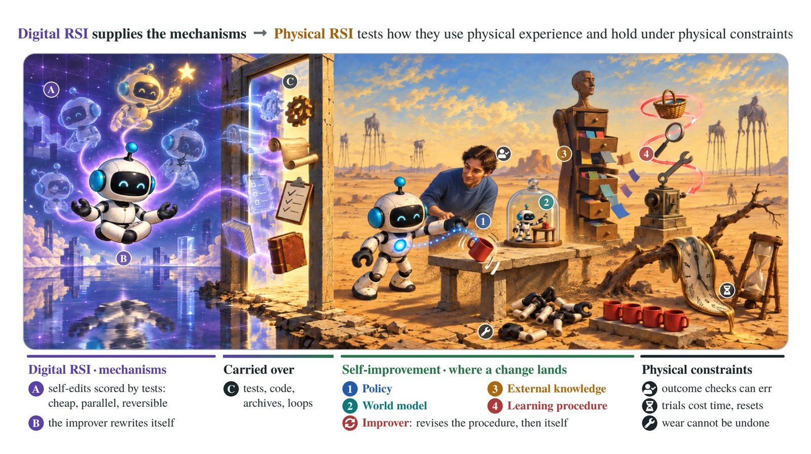
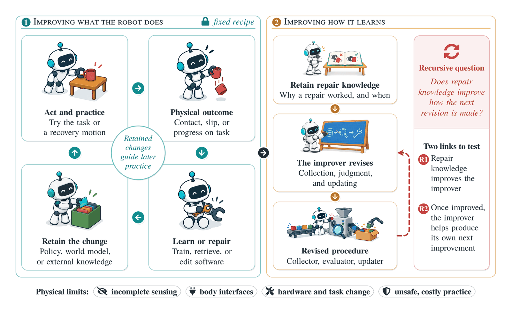
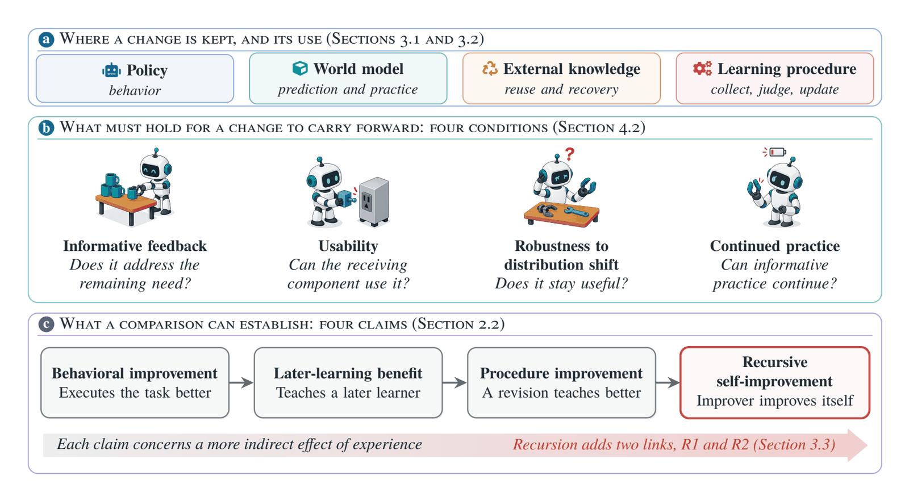
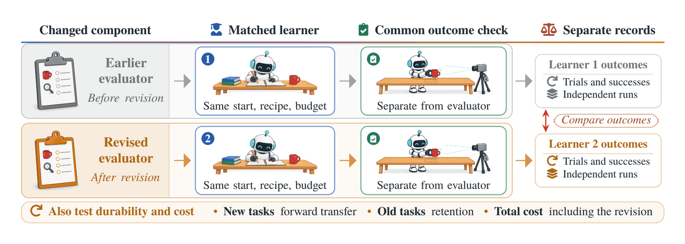
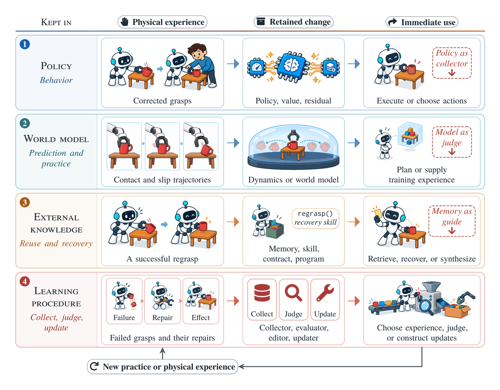
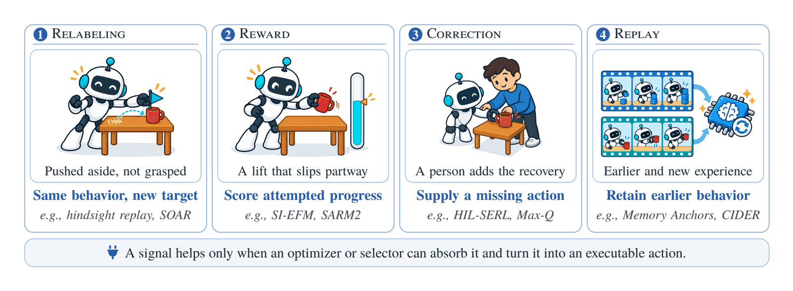
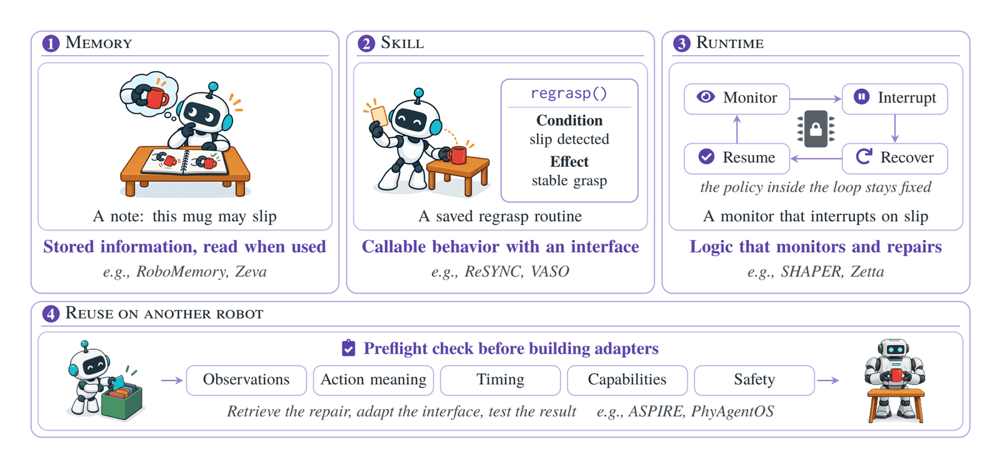
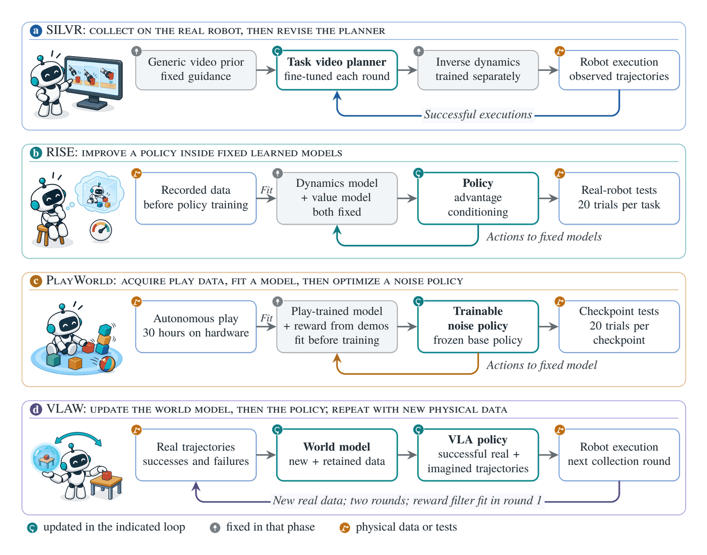
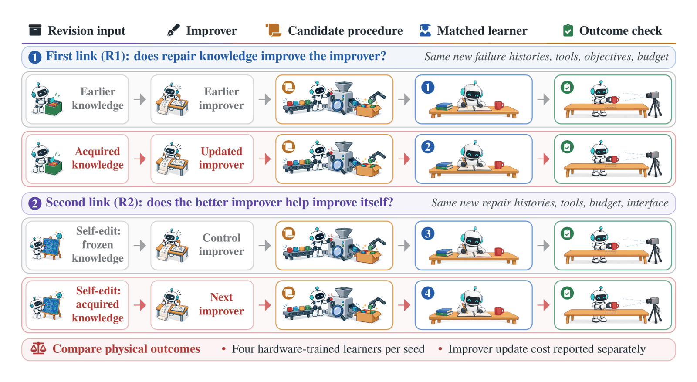

§3.1.1 Policy updates
Behavior
- Retained change
- Policy, value, residual
- Immediate use
- Execute or choose actions
- Principal claim
- Better task behavior
1NUS2HUST3SJTU4NTU5HKBU
* Corresponding author

The survey
01Overview

Recursive self-improvement (RSI) describes a system that improves not only its behavior but also the process by which it improves. Recent digital agents test this idea by rewriting their own code and checking each version with executable tests. Bringing these mechanisms into the physical world requires learning from partial observations through costly trials, while accounting for changing operating conditions and potentially irreversible consequences.
The survey positions RSI within robot learning and traces pathways from improving robot capabilities to improving the processes that generate them. It examines how physical experience can strengthen these improvement mechanisms, and when the resulting gains can support further self-improvement of the mechanisms themselves.


02Research questions

Is useful experience missing, or is progress limited by supervision, optimization, action generation, interfaces, or retention?
How does experience change behavior, reusable models or skills, and the collection, supervision, curriculum, or update procedures used in later learning?
When do improvements carry forward into better learning procedures and improvers, and what evidence would establish recursive self-improvement?
How do sensing, embodiment, reset, safety, cost, and hardware changes constrain the process?
03The review at a glance


What current evidence shows. Existing studies, concentrated in manipulation, support behavioral improvement, later-learning benefits, and procedure improvement. Some systems also change their improver's knowledge or tools, but no physical study reviewed here has yet isolated a gain attributable to recursion, which requires a controlled comparison against a version of the improver whose acquired knowledge is frozen.

04Four uses of retained change

§3.1.1 Policy updates

§3.1.2 World models

§3.1.3 Memories, skills, code

§3.2 Learning procedures




Collect on the real robot, then revise the planner

Improve a policy inside fixed learned models

Acquire play data, fit a model, then optimize a noise policy

Update the world model, then the policy; repeat with new physical data

05Toward recursive self-improvement




06Open problems

Refresh the judge, keep the task
Starting benchmarkVary only the evaluator; protected outcomes
Reuse, adapt, revalidate, or retire?
Starting benchmarkDeclared changes plus gradual drift
Spending robot time, attention, compute, wear
Starting benchmarkTask sequences with upkeep; Pareto reports
Which component limits improvement?
Starting benchmarkInjected faults; held-out natural failures
Which probe yields usable evidence?
Starting benchmarkJoint vs fixed, information-gain, sequential
Do repair lessons transfer to new failures?
Starting benchmarkTwo-round test (Figure 9)
Physical recursive self-improvement will be demonstrated not when a robot changes many times, but when knowledge of why one repair worked causally improves how the next repair is made, and when that improved capability, applied to new evidence, helps improve itself again without losing the ability to keep learning.
07Citation
@article{luo2026physicalrsi,
title = {Toward Recursive Self-Improvement in Physical AI},
author = {Luo, Meng and Bai, Zechen and Xu, Shanqing and Li, Yanlin and Li, Kaixin and Qian, Mengchen and Lu, Weifeng and Zhang, Ran and Zou, Yingtian and Luo, Ziyang and Chen, Wei and Lin, Hongzhan},
journal = {arXiv preprint arXiv:2610.29677},
year = {2026},
url = {https://arxiv.org/abs/2610.29677}
}The literature
Loading references…
Try another title, author, year, or venue.